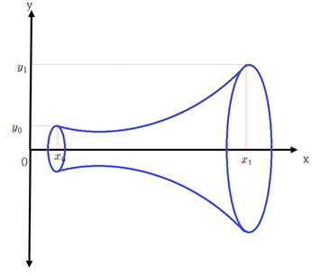
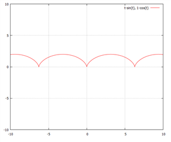
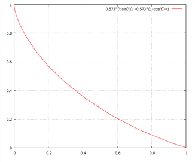

최단경로·catenary·brachistochrone에서 Ramsey/RCK, 동태적 가구·기업, Tobin q, turnpike theorem까지 원본의 연속형 응용을 보존한 장입니다.
좌표평면상 두 점 (x_{0} ,\,y_{0} ),\,(x_{1} ,\,y_{1} )을 연결하는 최단경로는?
(풀이)
(x_{0} \,,\,x_{1} )의 구간을 세분했을 때 x, y의 작은 증분을 \triangle x,\, \triangle y라 하자. 이때 \triangle x,\, \triangle y로 이루어진 직각삼각형의 빗변 \triangle s의 길이는 피타고라스의 정리에 의해
( \triangle s) ^{2} =( \triangle x) ^{2} +( \triangle y) ^{2}
\lim\limits_{\triangle s \to 0} {\triangle s\,=\,ds}
따라서 ds= \sqrt {dx^{2} +dy^{2} \,} = \sqrt {1+( \frac{dy}{dx} ) ^{2}} dx
따라서 ds를 [x_{0} \,,\,x_{1} ]에서 적분하면 호의 길이가 구해진다.
\int_{\text{curve}} {ds\,=\,} \int_{x_{0}}^{x_{1}} {\sqrt {1+( \frac{dy}{dx} ) ^{2}}} dx .................[134]
호의 길이를 최소화하는 것이므로 문제는 다음과 같다.
min\, \int_{x_{0}}^{x_{1}} {\sqrt {1+( \frac{dy}{dx} ) ^{2}}} dx
s.t \,y(x_{0} )=y_{0} ,\;y(x_{1} )=y_{1}
이 문제는 x를 시간 t의 개념으로 보면 변분학의 문제이다.
f(y,\,y ' \,)\,=\, \sqrt {1\,+y^{'2}}, y'\,=\, \frac{dy}{dx} 라 하면
\frac{\partial f}{\partial y} =0\,, \frac{\partial f}{\partial y ' } =\, \frac{1}{2 \sqrt {1\,+y^{'2}}} \times 2y ' \,=\, \frac{y'}{\sqrt {1\,+y^{'2}}}
오일러방정식은
\frac{\partial f}{\partial y} = \frac{d}{dx} ( \frac{\partial f}{\partial y ' } )\,
⇒ \, \frac{d}{dx} \frac{y ' }{\sqrt {1\,+y^{'2}}} \,=\,0
∴ \, \frac{y ' }{\sqrt {1\,+y^{'2}}} \,=\,C_{0}, C_{0}는 적분상수
y'에 대해 정리하면
y ' \,=\, \sqrt {\frac{C_{0}^{2}}{1-C_{0}^{2}}} \,=\,C_{1} , (∵ 길이 > 0)
∴ y(x)\,=\,C_{1} x+C_{2}, C_{2}는 적분상수
\,y(x_{0} )=y_{0} , y(x_{1} )=y_{1} 를 대입하면
y_{0} \,=\,C_{1} x_{0} +C_{2}
y_{1} \,=\,C_{1} x_{1} +C_{2}
⇒ {\begin{pmatrix}y_{1} \\ y_{0}\end{pmatrix}} \,=\, {\begin{pmatrix}x_{1} & \,1 \\ x_{0} & \;1\end{pmatrix}} {\begin{pmatrix}C_{1} \\ C_{2}\end{pmatrix}}
⇒ {\begin{pmatrix}C_{0} \\ C_{1}\end{pmatrix}} \,=\, {\begin{pmatrix}x_{1} & \,1 \\ x_{0} & \;1\end{pmatrix}}^{-1} {\begin{pmatrix}y_{1} \\ y_{0}\end{pmatrix}} \,
\,=\, \frac{1}{x_{1} -x_{0}} {\begin{pmatrix}1 & \,-1 \\ -x_{0} & \;x_{1}\end{pmatrix}} {\begin{pmatrix}y_{1} \\ y_{0}\end{pmatrix}} \,= \frac{1}{x_{1} -x_{0}} \, {\begin{pmatrix}y_{1} -y_{0} \\ x_{1} y_{0} -x_{0} y_{1}\end{pmatrix}}
∴ y(x)= \frac{y_{1} -y_{0}}{x_{1} -x_{0}} x+ \frac{y_{0} x_{1} -y_{1} x_{0}}{x_{1} -x_{0}}
따라서 두 점 (x_{0} ,\,y_{0} ),\,(x_{1} ,\,y_{1} )을 연결하는 최단경로는 두 점을 잇는 직선임을 알 수 있다.
이는 우리의 직관과 일치한다.
르장드르조건은
f_{y ' y ' } = \frac{(1+y^{'2} ) ^{\frac{1}{2}} -y^{'2} (1+y^{'2} ) ^{- \frac{1}{2}}}{1+y^{'2}}
= \frac{(1+y^{'2} )-y^{'2}}{(1+y^{'2} ) ^{\frac{1}{2}} (1+y^{'2} )} = \frac{1}{(1+y^{'2} ) ^{\frac{1}{2}} (1+y^{'2} )} \geq 0
따라서 최소화의 르장드르 조건을 만족
(풀이끝)
(x_{0} ,\,y_{0} ),\,(x_{1} ,\,y_{1} )를 연결하는 곡선 중 x 축을 중심으로 회전했을 때 최소 표면적을 만드는 곡선을 찾아라.
(x_{0} ,\,y_{0} ),\,(x_{1} ,\,y_{1} )를 연결하는 곡선을 x 축을 중심으로 회전하면 다음과 같은 원통이 그려진다.
이제 이 원통의 표면적을 최소화하는 곡선을 구하는 것이다.
(풀이)
반지름이 r 인 원주의 길이는 2 \pi r, 높이가 h 인 원통의 표면적은 2 \pi rh
따라서 문제는 다음과 같다.[136]
min\, \int_{x_{0}}^{x_{1}} {2 \pi y \sqrt {1+y^{'2}}} dx
s.t \,y(x_{0} )=y_{0} \,,\,y(x_{1} )=y_{1}
f\,=\,y \sqrt {1+y^{'2}}, y'\,=\, \frac{dy}{dx}
f_{y'} = \frac{yy'}{\sqrt {1+y^{'2}}}
f가 x와 관계가 없으므로 벨트라미항등식을 이용하는 것이 편리하다.
f-y ' f_{y ' } \,=\,y \sqrt {1+y^{'2}} - \frac{yy^{'2}}{\sqrt {1+y^{'2}}} =C_{1}, C_{1}는 상수
⇒ \,y(1+y^{'2} )-yy^{'2} =C_{1} \sqrt {1+y^{'2}}
⇒ \,y=C_{1} \sqrt {1+y^{'2}}
⇒ \,y^{2} =C_{1}^{2} (1+y^{'2} )
⇒ \,y^{2} -C_{1}^{2} y^{'2} -C_{1}^{2} =0
이 미분방정식을 풀기위해 변수분리법을 사용한다.
y^{'2} = \frac{y^{2} -C_{1}^{2}}{C_{1}^{2}}
⇒ C_{1} y ' =(y^{2} -C_{1}^{2} ) ^{\frac{1\,}{2}}, (∵ 거리이므로 양수)
⇒ C_{1} \frac{dy}{dx} =(y^{2} -C_{1}^{2} ) ^{\frac{1\,}{2}}
⇒ \frac{C_{1}}{\sqrt {y^{2} -C_{1}^{2}}} dy\,=\,dx
양변을 적분 하면
\int \frac{C_{1}}{\sqrt {y^{2} -C_{1}^{2}}} dy\,=\,x+\,C_{2}, C_{2}는 적분상수
⇒ c\,\cosh^{-1} \left( \frac{y}{C_{1}} \right) \,+\,C_{3} \,=\,x\,+\,C_{2} .................[137]
∴ y=C_{1} \,\cosh ( \frac{x+C_{4}}{C_{1}} ), where C_{4} \,=\,C_{2} \,-\,C_{3}
C_{1}과 C_{4}는 \,y(x_{0} )=y_{0} \,,\,y(x_{1} )=y_{1}를 대입하여 구함
\cosh x의 그래프는 포물선 형태이다.[138] 이런 형태의 곡선을 ‘catenary’ 라 부른다. 이는 두 기둥 사이에 체인을 연결했을 때 생기는 모양을 연상하면 된다. 따라서 최소표면적 원통의 모양은 대략 아래 그림과 같이 나팔모양을 하고 있다. 직관적으로 생각했을 때 최소표면적을 이루는 곡선의 모양이 직선일 것이라고 예상되지만 결과는 그렇지 않다.

(풀이끝)
중력이 있는 수직 평면상에 다른 두 점 A(x_{0} ,\,y_{0})와 B(x_{1} ,\,y_{1})가 있다고 하자(B가 A보다 아랫 쪽에 있다고 가정). x축의 A, B 사이의 거리, y축은 높이를 의미. 이제 A와 B를 잇는 실을 걸고, 그 실을 따라 움직이는 물체가 A에서 B에 도달하는 경우, 도달 시간이 최소가 되도록 하는 실이 이루는 곡선의 모양을 구하라.
(풀이)
중력이 관계된 문제이므로 이 문제를 풀기 위해서는 물리학적인 기본지식이 필요하다.[140]
(v ; 속도, t ; 시간, s ; 이동거리, g ; 중력가속도, m ; 질량, h ; 높이)
이동거리(s) = 속도(v) × 시간(t) 이므로
s=vt ⇒ v= \frac{ds}{dt}
역학적 에너지보존의 법칙에 따라 운동에너지와 위치에너지는 같으므로
mgh = \frac{1}{2} mv^{2}
⇒ v= \sqrt {2gh}, (v는 양수)
s는 곡선을 그리는 호의 길이
(x, y) 좌표평면상에서 높이를 y, 수평거리를 x라 하면 호의 거리는 피타고라스의 정리에 의해
ds= \sqrt {dx^{2} +dy^{2}} = \sqrt {1+( \frac{dy}{dx} ) ^{2}} dx
높이가 y이므로 v= \sqrt {2gy}
곡선을 따라 내려올 때 걸리는 시간은
t= \int_{\text{curve}} {\frac{1}{v} ds}
= \int_{0}^{x_{1}} \sqrt {\frac{1+y^{'2}}{2gy}} dx, where y'\,=\, \frac{dy}{dx}
= \frac{1}{\sqrt {2g}} \int_{0}^{x_{1}} \sqrt {\frac{1+y^{'2}}{y}} dx
시간 t를 최소화하는 문제이므로 이는 다음의 변분학 문제를 푸는 것과 같다.
min \, \frac{1}{\sqrt {2g}} \int_{0}^{x_{1}} \sqrt {\frac{1+y^{'2}}{y}} dx
s.t y(x_{0} )=y_{0} \,,\;y(x_{1} )=y_{1}
f(y,\,y')\,= \sqrt {\frac{1+y^{'2}}{y}} 이라 하면[141]
f가 x에 관계가 없으므로 벨트라미 항등식을 이용하면
f-y ' f_{y ' } \,=\,C_{1}, C_{1}은 상수
⇒ \sqrt {\frac{1+y^{'2}}{y}}-y^{'2} \frac{1}{\sqrt {y(1+y^{'2} )}} \,=\,C_{1}.................[142]
⇒ \frac{1+y^{'2}}{y}+\, \frac{y^{'4}}{y(1+y^{'2} )} \,-\,2 \frac{y^{'2}}{y} \,=\,C_{1}^{2}
⇒ \, \frac{1}{y(1+y^{'2} )} \,=\,C_{1}^{2}
⇒ y(1+y^{'2} )\,=\, \frac{1}{C_{1}^{2}} \,=\,C_{2}
⇒ y^{'2} \,=\, \frac{C_{2}}{y} \,-\,1
⇒ y ' \,=\,\pm \sqrt {\frac{C_{2} -y}{y}}
종착점이 시작점보다 높다면 기울기(\frac{dy}{dx})는 양수이므로
⇒ dy\,=\, \sqrt {\frac{C_{2} -y}{y}} dx
⇒ dx\,=\, \sqrt {\frac{y}{C_{2} -y}} dy
양변 적분을 하면
x\,+\,C_{3} \,=\, \int \sqrt {\frac{y}{C_{2} -y}} dy, C_{3}는 적분상수 ................①
y\,=\,C_{2} \,\sin^{2} \frac{\theta }{2}라 하면 dy\,=\,C_{2} \,\sin \frac{\theta }{2} \,\cos \frac{\theta }{2} d \theta.
①은
x\,+\,C_{3} \,=\, \int \sqrt {\frac{C_{2} \,\sin^{2} \frac{\theta }{2}}{C_{2} -C_{2} \,\sin^{2} \frac{\theta }{2}}} C_{2} \,\sin \frac{\theta }{2} \,\cos \frac{\theta }{2} d \theta
\,=\,C_{2} \int \frac{\,\sin \frac{\theta }{2}}{\cos \frac{\theta }{2}} \,\sin \frac{\theta }{2} \,\cos \frac{\theta }{2} d \theta
\,=\,C_{2} \int \,\sin^{2} \frac{\theta }{2} \,d \theta
\,=\,C_{2} \int {\frac{1}{2} (1-\cos \theta \,)d \theta }, (∵ 삼각함수 반각공식[143])
\,=\, \frac{C_{2}}{2} ( \theta \,-\,\sin \theta )+\,C_{4}, C_{4}는 적분상수
∴ \,x=\,P( \theta \,-\,\sin \theta )+\,Q, where P\,=\, \frac{C_{2}}{2}, Q\,=\,C_{4} \,-\,C_{3} ............②
y\,=\,C_{2} \,\sin^{2} \frac{\theta }{2}\,=\,P(1-\cos \theta \,)
이제 경계조건을 이용해서 P, Q 를 구한다.
시작점 A(x_{0} ,\,y_{0}) = (0, 0) 이라 하면
y\,=\,P\,\sin^{2} \frac{\theta }{2} 에서 y_{0} \,=\,0 이면 \theta_{0} \,=\,0
x_{0} \,=\,0, \theta_{0} \,=\,0 를 ②에 대입하면 Q\,=\,0
따라서 ②는 \,x=\,P( \theta \,-\,\sin \theta )
물체는 B(x_{1} ,\,y_{1})에서 멈추므로
\,x_{1} =\,P( \theta_{1} \,-\,\sin \theta_{1} )
\,y_{1} \,=\,P(1-\cos \theta_{1} \,)
방정식 2개, 미지수 P,\, \theta_{1} 2개이므로 미지수가 결정된다.
따라서 원점을 지나고 임의의 (x, y)를 통과하는 곡선은
\,x=\,P( \theta \,-\,\sin \theta )
y\,=\,P(1-\cos \theta \,)
이는 매개변수 \theta로 표현된 곡선의 방정식이다. 이 곡선은 반경 P를 갖는 휠의 한 점(원점을 지나는)이 그리는 궤적인 “cycloid”를 의미한다.[144]
예를 들어 P = 1 일 때의 그래프는 다음과 같다.

만약 종착점이 시작점보다 낮고 또한 시작점이 원점(0, 0)이 아니라 (a, b)라면 매개변수 방정식은 다음과 같다.[145]
높이는 y가 아니라 b-y
따라서 y에 관한 매개변수방정식은
b-y\,=\,P(1-\cos \theta \,)\,
시작점이 (a, b)이므로 y = b를 대입하면 \theta \,=\,0
②에 대입하면 \,a=\,P( \theta \,-\,\sin \theta )+\,Q
∴ Q\,=\,a
따라서 시작점이 (a, b)일 때 매개변수방정식은
\,x=\,P( \theta \,-\,\sin \theta )+\,a
y\,=\,-P(1-\cos \theta \,)\,+\,b
예) A(0, 1)에서 B(1, 0)로 구르는 구슬의 최소시간 궤적을 구하라.
(풀이)
A(0, 1)을 대입하면
\,0=\,P( \theta_{\scriptscriptstyle {A}} \,-\,\sin \theta_{\scriptscriptstyle {A}} )+\,a.............①
1\,=\,-P(1-\cos \theta_{\scriptscriptstyle {A}} \,)+b..............②
B(1, 0)을 대입하면
\,1=\,P( \theta_{\scriptscriptstyle {B}} \,-\,\sin \theta_{\scriptscriptstyle {B}} )+\,a...............③
0\,=\,-P(1-\cos \theta_{\scriptscriptstyle {B}} )+b...............④
시작점 A(0, 1)이므로 a = 0, b = 1,
①, ②에서 \theta_{\scriptscriptstyle {A}} \,=\,0
③, ④는
\,1=\,P( \theta_{\scriptscriptstyle {B}} \,-\,\sin \theta_{\scriptscriptstyle {B}} )
0\,=\,-P(1-\cos \theta_{\scriptscriptstyle {B}} )+1
⇒ P\,=\, \frac{1}{\theta_{\scriptscriptstyle {B}} \,-\,\sin \theta_{\scriptscriptstyle {B}}} \,=\, \frac{1}{1-\cos \theta_{\scriptscriptstyle {B}}}
이는 대수적으로 풀기 어려우므로 수치해석기법을 이용해 연립방정식을 푼다.[146]
∴ P = 0.573, \theta_{\scriptscriptstyle {B}} \,=\,2.41187
따라서 최소시간 궤적은
\,x=\,0.573( \theta \,-\,\sin \theta )
y\,=\,-0.573(1-\cos \theta \,)\,+\,1
이의 모양은 아래 그림과 같다.

(풀이끝)
A에서 B로 쇠구슬을 굴렸을 때 최단시간에 이르는 경로는 직선이 아닌 cycloid 곡선이다. 경로가 직선이 아니라 아래로 휘어지는 이유는 중력의 영향 때문이다. 높은 곳에 있는 구슬이 직선을 따라 내려올 때의 속도보다 사이클로이드 곡면을 타고 내려올 때의 속도가 더 빠르다는 것은 베르누이의 발견이다. 즉 최단거리로 가는 것보다 (좀 더 멀지만) 사이클로드 곡선으로 갈 때의 속도가 더 빠르다는 것이다. 그 이유는 사이클로드 곡선의 전반 궤도에서 물체가 중력 가속도를 더 유효하게 받아서 그것을 운동 에너지로 전환한 후, 그 운동 에너지를 후반 궤도에서 발산하기 때문이다. 실제로 하늘 높이 나는 독수리나 매가 땅 위에 있는 먹잇감을 낚아챌 때 직선으로 내려오는 것이 아니라 사이클로이드에 가깝게 목표물을 향해 곡선 비행을 한다고 한다.
경제학에서 고속도로정리(turnpike theorem)라는 것이 있다. 초기점과 최종점이 주어졌을 때 최적경제성장경로는 초기점과 최종점을 직선으로 연결한 점이 아니라 초기점에서 균형성장경로를 향해 가서 이를 따라 죽 가다가 최종점 근방에서 이를 이탈하여 최종점을 도착한다는 것이다. 이는 마치 자동차를 타고 A에서 B를 갈 때 가장 빨리 가는 방법은 A에서 B를 직선으로 가는 것이 아니라 A에서 출발하여 조금 돌더라도 A 부근에서 고속도로에 진입하여 고속도로를 타고 가다가 B 부근에서 고속도로를 나와 B에 도착하는 것이 최선인 것과 같은 이치이다.
이는 철학적으로도 시사하는 바가 있다. 단기적인 짧은 시각으로만 목표를 보지 말고, 장기적인 전략적 시각을 가지라는 뜻도 될 수 있다. ‘以迂爲直’ 굽은 것으로서 바른 것이 되게 하다라는 뜻으로 즉 급할 수록 돌아가라는 의미이다.
경제학적으로 보았을 때 이는 자본축적의 우회생산(迂廻生産 : roundabout production)을 의미한다고 할 수 있다. 우회생산이란 소비재의 생산에 사용될 본원적 생산요소인 노동력의 일부를 간접적인 생산수단의 생산에 사용하여, 즉 그 사용을 우회시킴으로써 한층 더 많은 생산물을 얻으려는 생산방법을 말한다. 즉 토지나 노동과 같은 본원적인 생산요소를 최종적인 목적인 소비의 생산에 모두 직접 사용하지 않고, 그 일부를 생산재의 생산에 우회적으로 사용, 그 다음에 이 생산재를 써서 소비재를 보다 능률적으로 증산토록 하는 생산방법이다. 자본주의 경제에서는 거의 모든 생산이 이런 의미에서의 우회생산의 형태를 띠고 있다고 말할 수 있다. 이와 같이 그때그때 시간을 투입하여 생산한 것을 소비하는 대신에, 오랜시간 동안 지식 (예를 들어 배와 그물의 생산, 그리고 장기간 교육)에 투자하면 당장에는 손해이지만, 궁극적으로 유리하게 되는 현상을 뵘바베르크는 '우회생산의 이익'이라고 불렀다.
(가정)
정책입안자의 목적은 사회후생(social welfare)의 현재가치를 극대화
총생산은 소비와 투자로 구성되고 정부, 수출입 부문은 고려 안함(케인즈 총수요모형 적용)
자본변동은 전액 투자된다.(I= \frac{dK}{dt}, I;투자, K;자본)
효용함수는 admissible 조건을 만족[148]
the flow of utility per person to the quantity of consumption per person, c.
We assume that u(c) is increasing in c and concave
u‘(c)>0, u“(c)<0.
The concavity assumption generates a desire to smooth consumption over time: households prefer a relatively uniform pattern to one in which c is very low in some periods and very high in others.
This desire to smooth consumption drives the household’s saving behavior because they will tend to borrow when income is relatively low and save when income is relatively high.
We also assume that u(c) satisfies inada conditions:
통상적인 Inada 조건은 효용수준 u(c) 자체가 아니라 한계효용 u'(c)에 대한 조건이다.
\lim_{c \to 0^{+}} u'(c)=\infty,\qquad \lim_{c \to \infty} u'(c)=0
기술수준은 생산함수로 표현되며 1차 동차 함수이다.
생산함수가 1차 동차이면 노동자 1인당 생산은 다음과 같이 쓸 수 있다.
y \equiv \frac{Y}{L}=F\!\left(\frac{K}{L},1\right)=f(k),\qquad k\equiv\frac{K}{L}...............[149]
Y ; 총생산
K ; 자본
L ; 노동
k ; 두당자본(=\frac{K}{L})
Y=C+I
Y=C+ \frac{dK}{dt}
양변을 L로 나누면
f(k)=c+ \frac{1}{L} \frac{dK}{dt}
} =c+ \frac{dk}{dt} +k \frac{dL/dt}{L}
\frac{dL/dt}{L} =n 은 인구증가율을 의미하므로
c=f(k)- \frac{dk}{dt} -nk
(모형)
\max\; \int_{0}^{\infty } {U(c(t))e^{-rt}} dt
s.t\; \frac{dk}{dt} =f(k)-nk-c(t)\,,\;(c,\,k \geq 0)
k(0)=k_{0}
u(c) ; 효용
c(t) ; 두당 소비
r ; 할인율 (매년 일정하다고 가정)
(풀이)
c를 목적함수에 대입하면 최종값이 정해지지 않은 변분학 문제가 된다.
적분내 함수를 f라 하면
f=U(f(k)- \frac{dk}{dt} -nk\,)e^{-rt}
f_{y} - \frac{d}{dt} f_{y ' } =0 ............Euler 방정식 f_{y ' } (y(t_{1} ),\,y ' (t_{1} ),\,t_{1} )=0 .............최종값에 대한 transversality 조건 |
ⅰ) Euler 방정식
상태변수가 두당자본(k)이므로
f_{k} =( \phi ' (k)-n)e^{-rt} U '
f_{k ' } =\,-U ' e^{-rt}
\frac{d}{dt} f_{k ' } \,=\,-U '' c ' e^{-rt} \,+rU ' e^{-rt}
오일러 방정식은
( \phi ' (k)-n)e^{-rt} U ' =\,-U '' c'e^{-rt} +rU ' e^{-rt}
( \phi ' (k)-n-r)U ' =\,-c'U ''
c'\,=\,- \frac{U'}{U''} ( \phi ' (k)-n-r)
ⅱ) transversality 조건
f_{k ' } = -U ' e^{-rt} \begin{matrix} \\ \end{matrix} \right ┃ _{t= \infty } \,=0 , 항상 성립
Ramsey 모형은 다음과 같은 점에서 앞 장에서 연구한 Solow모형과 다르다.
램지모형은 매 시점에서의 소비량을 고려하기 때문에 따라서 저축이 내생변수가 된다. 즉 Solow모형과 달리 저축율은 이제 더 이상 고정되지 않는다.[150]
R-C-K 모형의 핵심은 경제성장률을 단순히 인구증가율과 이자율의 합으로 정하는 것이 아니라, 소비의 최적 시간경로를 Euler 방정식으로 결정한다는 데 있다. 위의 효용함수와 상태방정식의 표기에서는
\dot c=-\frac{U'(c)}{U''(c)}\,[f'(k)-n-r]
가 소비동학을 결정한다. CRRA 효용 U(c)=\frac{c^{1-\theta}-1}{1-\theta}를 쓰면 -U'/U''=c/\theta이므로 \dot c/c=[f'(k)-n-r]/\theta가 된다. 따라서 인구증가율이나 이자율 하나만으로 장기성장률의 부호를 판단할 수는 없으며, 기술진보·생산함수·선호와 정상상태 조건을 함께 보아야 한다.
적절한 볼록성, 완전경쟁 및 시장완전성 등의 조건 아래에서는 사회계획자의 최적경로와 경쟁균형을 연결할 수 있으며 그 의미에서 효율성을 논할 수 있다. 파레토 최적성은 단순히 계획기간이 무한대라는 사실 자체에서 자동으로 생기는 것은 아니다.
모형에 저축을 포함한 Samuelson's or Diamond's Overlapping generations models에서 파레토 최적인 결과는 얻어지지 않는다.[151]
국가는 얼마를 저축해야 하는가?
저축률 × 화폐의 한계효용 = the total net rate of enjoyment of utility falls short of the maximum possible rate of enjoyment.
(가정)
① 세대간 효용의 시간 할인을 고려 않함.
② 총만족(총효용)은 총소비량만의 함수이다. 분배적 문제는 고려 않함.
③ 다양한 재화, 다양한 자본, 다양한 노동 등, 다양성을 고려 않함.
(모형)
savings plus consumption must equal income. Its income is taken to be a general function of the amounts of labour and capital
\frac{dK}{dt} +C(t)\,=\,f(L,\,K)
f(L,K) : 총소득
C(t) : 소비
L(t) : 노동
K(t) : 자본
U(C) : 소비의 효용
V(L) : 노동의 비효용
The more we save the sooner we shall reach bliss, but the less enjoyment we shall have now, and we have to set the one against the other
v(L)\,=\, \frac{\partial f}{\partial L} u(C) ................① , where v(L)\,=\, \frac{\partial V}{\partial L} \,,\;u(C)\,=\, \frac{\partial U}{\partial C}
즉, the marginal disutility of labour at any time = the product of the marginal efficiency of labour by the marginal utility of consumption at that time
u(C)\,= \left[ 1+ \frac{\partial f}{\partial K} \triangle t \right] u(C(t+ \triangle t)\,)...............②
\frac{\partial f}{\partial K} : the rate of interest earned by waiting.
즉, the advantage derived from an increment △x of consumption at time t, = that derived by postponing it for an infinitesimal period △t, which will increase its amount to △x(1 + \frac{\partial f}{\partial K}△t)
②는 극한에서
⇒ \lim\limits_{\triangle t \to 0} {\frac{u(C(t+ \triangle t)\,)-u(C)}{\triangle t}} \,=- \lim\limits_{\triangle t \to 0} \frac{\partial f}{\partial K} u(C(t+ \triangle t)\,)
⇒ \frac{du}{dt} \,=- \frac{\partial f}{\partial K} u(C)
즉, u(x), the marginal utility of consumption, falls at a proportionate rate given by the rate of interest in the absence of discounting
(모형)
Y(t)\,=F(K,\,L)\,=K^{\alpha } [Z(t)L] ^{1- \alpha } .................①
The economy has a perfectly competitive production sector that uses a Cobb-Douglas aggregate production function
\frac{L'}{L} \,=\,n
labor supply (the same as population) increases exogenously at a constant rate n
\frac{X ' }{X} \,=g
X’ is an index of labor productivity that grows at rate g[154]
the household is seen as an infinitely-lived family, a dynasty, whose current members act in unity and are concerned about the utility from own consumption as well as the utility of the future generations within the family.
Every family has L(t) members and L(t) changes over time at a constant rate, n :
\mathbf{L}(\mathbf{t})\,=\,\mathbf{L}(0)\mathbf{e}^{\mathbf{n}\mathbf{t}}
미래 총효용의 현재가치를 최대화하는 것
maximize U= \int_{0}^{\infty } {e^{- \rho t} U(C(t)) {L(t)} dt}
= \int_{0}^{\infty } {e^{-( \rho -n)t} U(C(t))L(0)dt} ............ⓐ
\rho ; 할인율
C(t) ; 한 명의 소비
{L(t)} ; 인구수
소비(현재가치)는 초기소득과 노동소득(현재가치)의 합을 초과할 수 없다.
이자율 r(t), 임금 w(t)를 시간 t의 함수라고 한다면
t기의 소비 C(t)의 현재가치는 C(t)e^{- \int_{0}^{t} {r( \tau )d \tau }}...............[155]
t 시점에서 자본의 현재가치와 每時間 소비의 현재가치의 합은 초기자본과 每時間 임금 소득의 현재가치 합과 같다.
가구의 초기 자본은 K(0), 시간 t 에서의 자본은 K(t) 라 하면
e^{- \int_{0}^{t} {r( \tau )d \tau }} K(t)\,+ \int_{0}^{t} {e^{- \int_{0}^{s} {r( \tau )d \tau }}} C(s)L(s)ds\,=\,K(0)+ \int_{0}^{t} {e^{- \int_{0}^{s} {r( \tau )d \tau }}} W(s)L(s)ds\,............①
양변을 t에 대해서 미분하면
-r(t)e^{- \int_{0}^{t} {r( \tau )d \tau }} K(t)\,+e^{- \int_{0}^{t} {r( \tau )d \tau }} \frac{d}{dt} K(t)+e^{- \int_{0}^{t} {r( \tau )d \tau }} C(t)L(t)\,=\,e^{- \int_{0}^{t} {r( \tau )d \tau }} W(t)L(t)\,......[156]
양변을 e^{- \int_{0}^{t} {r( \tau )d \tau }} \, 로 나누면
-r(t)K(t)\,+ \frac{d}{dt} K(t)+C(t)L(t)\,=W(t)L(t)\,
⇒ \frac{d}{dt} K(t)\,=W(t)L(t)\,+r(t)K(t)\,-C(t)L(t)..............②
the increase in financial wealth per time unit equals saving which equals income minus consumption. Income is the sum of the net return on financial wealth, r(t)K(t) and labor income, W(t)L(t) where W(t) is the real wage. Saving can be negative. In that case the household “dissaves” and does so simply by selling a part of its stock of capital goods or by taking loans in the credit market.
\frac{K}{L} \,=\,k 라 하면
\frac{dk}{dt}= \frac{1}{L} \frac{dK}{dt} - \frac{K}{L^{2}} \frac{dL}{dt}.........[157]
= \frac{1}{L} \frac{dK}{dt} -kn , (∵ \frac{1}{L} \frac{dL}{dt} \,=\,n)
∴ \frac{1}{L} \frac{dK}{dt} \,=\, \frac{dk}{dt} \,+\,kn ................③
한편 ②를 L로 나누면
\frac{1}{L} \frac{dK}{dt} \,=W\,+rk\,-C ................④
④에 ③을 대입하고 정리하면
\, \frac{dk}{dt} \,=\,(r-n)k\,+W-C ................ⓑ
corrected interest rate appears, namely the interest rate, r minus the family size growth rate, n. Although deferring consumption gives a real interest rate of r, this return is diluted on a per head basis because it will have to be shared with more members of the family.
한편, the life time present value of consumption can not exceed the life-time
income plus initial wealth.
\int_{0}^{\infty } {e^{- \int_{0}^{x} {r( \tau )d \tau }} C(x)L(x)dx \leq K_{0} \,+\,} \int_{0}^{\infty } {e^{- \int_{0}^{x} {r( \tau )d \tau }} W(x)L(x)dx}
⇒ K_{0} \,+\, \lim\limits_{t \to \infty } \int_{0}^{t} {e^{- \int_{0}^{x} {r( \tau )d \tau }} [W(x)-C(x)]L(x)dx \geq 0}
⇒ \lim\limits_{t \to \infty } e^{- \int_{0}^{t} {r( \tau )d \tau }} K(t)\, \geq 0 ..............⑤, (∵ ①을 이항하고 시간 t의 극한을 취함)
the present value of the household’s asset cannot be negative in the limit. ⑤ is known as the no-Ponzi-game condition[158]
financial wealth far out in the future cannot have a negative present value. That is, in the long run, debt is at most allowed to rise at a rate less than the real interest rate r. The NPG condition thus precludes permanent financing of the interest payments by new loans
⑤를 k로 정리하면
\lim\limits_{t \to \infty } e^{- \int_{0}^{t} {r( \tau )d \tau }} L(t)k(t)\, \geq 0
⇒ \lim\limits_{t \to \infty } e^{- \int_{0}^{t} {[r( \tau )-n]d \tau }} L(0)k(t)\, \geq 0 .............ⓒ
(문제)
ⓐ, ⓑ, ⓒ를 결합하면[159]
max U = \int_{0}^{\infty } {e^{-( \rho -n)t} U(C(t))dt}
s.t \frac{dk}{dt} \,=\,[r(t)-n]k(t)+w(t)-c(t)
\lim\limits_{t \to \infty } e^{- \int_{0}^{t} {[r( \tau )-n]d \tau }} k(t)\, \geq 0
(풀이)
해밀토니안 :
H\,=\,e^{-( \rho -n)t} U(C)+ \lambda [\,(r-n)k+w-c]
1차조건 :
\frac{\partial H}{\partial C} \,=\,0\,⇒ \,e^{-( \rho -n)t} u'(c)= \lambda ..............①
\frac{\partial H}{\partial k} \,=\,- \frac{d \lambda }{dt} \,⇒ \lambda (r-n)=\,- \frac{d \lambda }{dt} .................②
TVC :
\lim\limits_{t \to \infty } {\lambda (t)k(t)=0}
이는 사실상 non-Ponzi game 조건과 같은 의미[160]
2차조건 : ⓐ는 오목함수, ⓑ는 볼록함수
가정에서 ⓐ는 오목함수, ⓑ는 선형결합이므로 볼록함수
①을 t에 대해 미분하면
-( \rho -n)e^{-( \rho -n)t} u ' (c)+e^{-( \rho -n)t} u '' (c)c ' (t)\,=\, \frac{d \lambda }{dt} \,..........③
①, ②, ③을 결합하여 정리하면
-( \rho -n)e^{-( \rho -n)t} u ' +e^{-( \rho -n)t} u '' c ' \,=\,- \lambda (r-n)
⇒ ( \rho -n)e^{-( \rho -n)t} u ' -e^{-( \rho -n)t} u '' c ' \,=\,e^{-( \rho -n)t} u ' (r-n)
⇒ ( \rho -n)u ' -u '' c ' \,=\,u ' (r-n)
⇒ ( \rho -r)u ' \,=\,u '' c ' \;...................④
⇒ r\,=\, \rho \,-\, \frac{u''}{u'} c'
좌변은 저축의 시장이자율 수입
우변은 요구수익률(required rate of return), 곧 저축의 비용
\rho : 오늘 소비하지 않는 비용, 요구효용비율(required utility rate of return)[161]
\, \frac{u '' }{u ' } c ' : 오늘 소비로 인한 효용증가(한계효용은 체감한다.)
The household is willing to save the marginal unit only if the actual return equals the required return
④를 정리하면
\frac{c ' (t)}{c(t)} =\, \frac{u ' (c)}{cu '' (c)} ( \rho -r) ; 케인즈-램지 원칙
상대적 위험회피(ralative risk aversion:RRA) 계수를 \frac{cu '' (c)}{u ' (c)} 라 정의하면
⇒ \frac{c ' }{c} =\,- \frac{u ' (c)}{cu '' (c)} (r- \rho ) = \frac{1}{RRA}
\frac{c ' }{c}은 소비의 증가율을 의미 , \,- \frac{u ' (c)}{cu '' (c)} >0 은 기간간 대체탄력성(EIS)
consumption grows whenever the market discount rate(r) is larger than the subjective discount rate(ρ). In that case, the consumer is less impatient than the market.
The inverse of the curvature is called the Elasticity of Intertemporal Substitution (EIS). The smaller is the curvature, the bigger is the elasticity, the less painful for household to move consumption across time periods. In this case, small changes in r relative to ρ ⇒ large changes in savings
<가정>
K(t) ; t 시점에서 자본
L(t) ; t 시점에서 노동투입량
I(t) ; t 시점에서 투자
w(t) ; t 시점에서 임금
\rho (t) ; t 시점에서 자본의 가격
ⅰ) 생산함수의 기본가정들 만족
㉠ 규모에 대한 수익불변(1차동차함수),
f( \alpha L, \alpha K)= \alpha f(L,K)
㉡ 오목함수, 2차미분 가능
f_{\scriptscriptstyle {L}} (L,K) \geq 0 , f_{\scriptscriptstyle {LL}} \leq 0
f_{\scriptscriptstyle {K}} (L,K) \geq 0 , f_{\scriptscriptstyle {KK}} \leq 0
㉢ Inada조건
\lim\limits_{\scriptscriptstyle {K \to \infty}} {f_{\scriptscriptstyle {K}} =0}, \lim\limits_{\scriptscriptstyle {L \to \infty}} {f_{\scriptscriptstyle {L}} =0}
\lim\limits_{\scriptscriptstyle {K \to 0}} {f_{\scriptscriptstyle {K}} = \infty }, \lim\limits_{\scriptscriptstyle {K \to 0}} {f_{\scriptscriptstyle {K}} = \infty }
ⅱ) 자본은 가역적(reversible)이다. 즉, 자본은 감소할 수 있다.[163]
K(t), I(t) ≶ 0
ⅲ) 신규투자는 자본의 변동분과 상각되서 없어지는 분량을 합한 것
I(t)= \frac{dK}{dt} + \delta K(t) , \delta ; 상각률(시간에 상관없이 일정)
ⅳ) 노동과 투자는 각각의 가격에 영향을 미치지 않는다. 요소시장이 완전경쟁적이므로 임금과 자본 가격은 주어진 것으로 가정
\frac{dL}{dw} =0 , \frac{dK}{d \rho } =0
기업은 총수입에서 투입요소비용을 뺀 순현금흐름(net cash flow)의 현재가치를 최대화하는 것이 목적이다.
\max\; \int_{0}^{\infty } {e^{-rt}} [pf(L,K)-wL- \rho I]dt
s.t\;K ' =I- \delta K
p(t) ; t 시점에서 생산물 가격
r(t)=r ; 이자율 또는 투자수익률(시간에 상관없이 일정)
(풀이)
상태변수는 K(t), 통제변수는 L(t), I(t)[164]
Hamiltonian 함수는
H=e^{-rt} [pf(L,K)-wL- \rho I]+ \lambda (I- \delta K)
ⓐ 통제변수 L 최적화 조건
H_{\scriptscriptstyle {L}} =e^{-rt} [pf_{\scriptscriptstyle {L}} -w]=0
⇒ f_{\scriptscriptstyle {L}} = \frac{w(t)}{p(t)}
⇒ p(t)f_{\scriptscriptstyle {L}} =w(t)
각 시점의 노동의 한계생산물은 각 시점의 실질임금과 같아야 한다. 또는 각 시점의 노동의 한계생산물 가치는 각 시점의 명목임금과 같아야 한다. 정태적 최적화와 같은 결과로서 정태적 최적화의 동태적 연장이라 할 수 있다.
ⓑ 통제변수 I 최적화조건
H_{\scriptscriptstyle {I}} =-e^{-rt} \rho + \lambda =0
⇒ e^{-rt} \rho (t)\,=\, \lambda (t)....................①
\rho ,\;r가 I와 상관없는 외생변수이므로 최적투자 I*은 미분이 아닌 다음을 이용해 푼다.
H=e^{-rt} [pf(L,K)-wL- \rho I]+ \lambda (I- \delta K)
=( \lambda - \rho e^{-rt} )I+pf(L,K)-wL- \lambda \delta K
H가 I의 선형함수이므로 I의 계수에 따라 최적값 I*은 (+\infty ,\,- \infty)로 변한다.
ⅰ) \lambda > \rho e^{-rt} ⇒ I*\,=\, \infty
ⓑ \lambda < \rho e^{-rt} ⇒ I*\,=\,- \infty
ⓒ \lambda = \rho e^{-rt} ⇒ I*는 임의의 값을 갖는다.
\lambda = \rho e^{-rt}는 달성하기가 매우 어렵고 \lambda = \rho e^{-rt}이 달성되었다고 하더라도 \rho 또는 r의 조그만 변화도 I*는 +\infty ,\,- \infty가 되므로 I*는 일종의 면도날(knife’s edge) 균형이라 할 수 있다.
위 세 가지 어떠한 경우도 경제학적으로 의미있는 설명을 제시할 수 없다.
투자 I에 상하한의 제약이 있다면( rm0 \leq I \leq \overline{I} ), I의 계수에 따라 I*의 값은 0 혹은 \overline{\mathbf{I}}로 순식간에 전환되는 bang-bang 해가 될 것이다.
ⓐ \lambda > \rho e^{-rt} ⇒ \mathbf{I}*\,=\, \overline{\mathbf{I}}
ⓑ \lambda < \rho e^{-rt} ⇒ \mathbf{I}*\,=\,0
최적투자가 외생변수의 변동에 따라 순간적으로 전환하는 bang-bang 해라는 결론 역시 경제학적으로 무의미한 결론이다.
이상과 같은 비현실적인 결론이 도출되는 이유는 헤시안이 투자의 선형함수로 표현되었기 때문이다. 이는 요소시장이 완전경쟁시장이라서 투자수요와 무관하게 자본재 가격이 고정이라는 가정과 연관이 있다.[165]
ⅲ) 상태변수의 승수방정식
H_{\scriptscriptstyle {K}} \,=\,e^{-rt} pf_{\scriptscriptstyle {K}} - \lambda \delta =- \lambda '...............②
①의 양변을 t에 관해 미분하면
\lambda ' =-r \rho e^{-rt} + \rho ' e^{-rt}...............③
②와 ③을 결합하면
r \rho e^{-rt} - \rho ' e^{-rt} =e^{-rt} pf_{\scriptscriptstyle {K}} -e^{-rt} \rho \delta
⇒ r \rho - \rho '=pf_{\scriptscriptstyle {K}} - \rho \delta
⇒ pf_{\scriptscriptstyle {K}} = {\rho (r+ \delta )- \rho ' } ....................④
자본 한 단위를 구매하면 그 돈으로 다른 곳에 투자했을 때 얻을 수 있는 소득이 감소하므로 이자수입 만큼의 기회비용이 발생한다(\rho r). 또한 이 구매설비에 대한 감가상각비용이 추가적으로 발생한다(\rho \delta). 따라서 자본 한 단위의 총기회비용은 이자소득 상실분 + 감가상각비용. 단 자본재의 가격은 항상 일정한 것이 아니라 시간에 따라 변하므로 이 부분을 고려해야 한다(\rho'). 자본재의 가격이 구입시보다 증가한다면 자본재를 되파는 이익이 있을 것이므로 이 부분 만큼 기회비용에서 제하여 준다. 그러나 자본재의 가격이 구입시보다 하락한다면 이 부분 만큼의 추가적인 기회비용이 발생할 것이다.
따라서 자본 한 단위를 구매하는데 따르는 총기회비용(oppertunity cost)은 \rho (r+ \delta )- \rho ', 이를 Jorgenson은 내재적 임대비용(implicit rental cost)라 불렀다. 즉 자본의 한계생산물 가치가 내재적 임대비용과 같아지는 점까지 투자가 이루어져야 한다는 것을 의미한다.
④를 다시쓰면
\rho ' (t)-(r+ \delta ) \rho (t)=-p(t)f_{\scriptscriptstyle {K}}
이는 비동차항이 t의 함수인 \rho에 관한 1차 비동차미분방정식이다.
미분방정식 y'+p(x)y=r(x)의 해
y=e^{-h} \int {e^{h} rdx+Ce^{-h}} , h= \int {pdx} |
\rho ' (t)-( \delta +r) \rho (t)=-p(t)f_{\scriptscriptstyle {K}}
h= \int {-( \delta +r)dt} =-( \delta +r)t
\rho (t)=e^{(r+ \delta )t} \int {[-e^{-(r+ \delta )x} pf_{\scriptscriptstyle {K}} ]dx} +Ce^{(r+ \delta )t}
\rho (t)= \int_{\text{t}}^{\infty } {[e^{-(r+ \delta )(x-t)} pf_{\scriptscriptstyle {K}} ]dx} +e^{-(r+ \delta )(T-x)} \rho (T)..........②
ⅳ) 기간이 무한대일 때 transversality 조건
상태변수의 최종값이 미정이고 기간이 무한대이므로 다음 transversality 조건을 적용한다.[166]
\lim\limits_{t \to \infty } {\lambda (t)} = \lim\limits_{t \to \infty } {e^{-rt} \rho } (t)=0
∴ \lim\limits_{\scriptscriptstyle {T \to \infty}} e^{-(r+ \delta )(T-x)} \rho (T)=0
∴ \rho (t)= \int_{\text{t}}^{\infty } {[e^{-(r+ \delta )(x-t)} pf_{\scriptscriptstyle {K}} ]dx}
자본재의 가격은 자본의 한계생산물가치의 현재가치의 합과 같다.
ⅴ) 상태변수의 비음조건 (K(t) \geq 0\,,\;(t \geq 0))
?
정태적 기업이론은 기업의 단기적 이윤 극대화 목적에 따라 자본이 신축적으로 즉시 결정되고 자본량이 결정되면 이는 변함없이 유지될 것이라고 주장한다. 또는 매기 이윤극대화 결정은 다른 기간의 결정에 영향을 미치지 않고 독립적이라고 가정하므로 해당기간의 정태적 이윤극대화 문제를 풀면된다. “자본재의 생산량은 매년 변하므로 이를 반영하지 못하고 있기 때문에 제대로된 분석을 하지 못하고 있다. 자본량과 투자의 함수는 매기 변하는데 이를 반영하지 못하고 있는 것이다. 이는 굉장히 비현실적인 가정이라 할 수 있다.” 전기의 투자가 다음기의 투자결정에 영향을 미치는 것이 일반적이므로 시간에 따른 투자의 변화를 전혀 고려하지 않으므로 비현실적이다.
반면 동태적 기업이론은 자본재의 가격이 시간에 따라 변한다는 전제하에(자본이 시간의 함수) 기업의 생존기간 동안(일반적으로 무한대로 가정) 기업이윤의 현재가치의 최대화를 목표로 한다. 이 문제는 최적제어문제의 최대화원칙을 써서 최적 투자경로를 도출한다.
그럼에도 불구하고 동태적모형 또한 정태적 모형과 같이 자본이 마찰 없이(frictionless), 순식간에(instantaneously) 결정된다고 가정하고 있다.
자본이 완전히 가역적(reversible)이라고 가정하는 것은 현실적이지 않을 수 있다. 현실의 많은 자본재는 설치 후 되팔거나 다른 용도로 전환할 때 손실이 발생하며, 경우에 따라서는 폐기비용까지 발생한다. 이러한 투자 비가역성(irreversibility)은 투자결정에 추가적인 마찰과 옵션가치를 만든다.
투자에 제약이 없다면 자본재가격의 변화는 투자의 (-\infty ,\,+ \infty)의 bang-bang 해를 낳는다. 예를 들어 한 국가에서 자본이익률이 타국가보다 더 높아진다면 타국의 자본이 모두 이 국가로 유입될 것이고 투자율은 무한대가 될 것이다. 이 문제는 앞에서 본 바와 같이 통제변수인 투자함수에 비음조건을 둠으로써 해결될 수 있다. 그러나 이 경우 bang-bang 해라는 비현실적인 결과가 도출되었다. 최적 투자량이 시간에 따라서 0도 되었다가 최대값도 되는 현상은 비현실적인 결과이다.
현실적으로 투자 결정에는 투자비용과 수요에 대한 예측이 중요한 역할을 함에도 불구하고 기대예측이 투자 결정에 미치는 영향을 고려 않함. 기업은 매출의 신장 혹은 축소 가능성을 예상하여 투자결정을 내리는 것이 일반적이다.
動態的 規制理論(Dynamic optimal regulation theory)
(가정)
⦁효용함수
- 단조증가 오목함수, Inada조건 만족,
- 효용은 소비의 함수
- 현재효용과 미래효용간의 한계대체율(r)은 양(+)이고 일정[167]
⦁균제경제성장경로는 Solow 모형을 따른다.
\, \frac{dk(t)}{dt} = \phi (k)-c(t)- \theta k.........[168] , \theta \,=\, \delta +n(=감가상각률+인구증가율)
규제자는 총효용의 현재가치를 최대화하는 정책을 선택한다.
(모형)
\max\; \int_{0}^{\top} {e^{-rt}} U(c)dt
s.t\;k ' =f(k)- \theta k-c , k(t_{0} )=k_{0}, 0 \leq c \leq f(k), c는 구간연속함수
U(c(t)) : t 시점에서 사회구성원의 총효용
(풀이)
해밀토니안 함수는
H=e^{-rt} U(c)+ \lambda [f(k)- \theta k-c]
최대화원칙:
\frac{\partial H}{\partial c} =e^{-rt} U ' (c)- \lambda =0
⇒\lambda (t)=e^{-rt} U'(c(t)) ..............①
최적성장경로를 따른 자본축적의 기회비용은 소비 한단위 감소로 인한 한계효용 감소분의 현재가치이다.
\frac{\partial H}{\partial k} = \lambda f ' (k)- \lambda \theta =- \lambda '............②
⇒f ' - \theta + \frac{\lambda ' }{\lambda } =0
f' 는 한계생산물, \frac{\lambda '}{\lambda } 는 자본증가의 이득을 의미하므로[169] f'+ \frac{\lambda '}{\lambda }는 두당자본 1단위 증가에 따른 한계이득을 의미, \theta는 \delta +n (감가상각율+인구증가율)이므로 자본마모분에 대한 대체비용 + 인구증가에 의한 두당자본의 희석효과를 의미한다. n은 두당자본에 대한 효과이므로 순수 자본에 대한 비용은 감가상각에 의한 자본교체비용 뿐이다. 이는 곧 두당자본 1단위 증가에 따른 한계비용을 의미.
따라서 위 식은 두당자본 1단위 추가의 한계이득이 한계비용과 같아지는 점까지 자본 증가가 이루어져 함을 의미한다.
\frac{\partial H}{\partial \lambda } =f(k)- \theta k-c=k'..................③
①을 t에 대해 미분하면
\lambda ' =-re^{-rt} U ' +e^{-rt} U ' ' c '...............④
⇒ c ' = \frac{\lambda ' +re^{-rt} U ' }{e^{-rt} U '' } = \frac{\lambda ( \theta -f')+re^{-rt} U ' }{e^{-rt} U '' }
= \frac{e^{-rt} U'( \theta -f ' )+re^{-rt} U ' }{e^{-rt} U '' }
=- \frac{U ' (f ' -( \theta +r))}{U '' }
충분조건:
효용함수가 오목함수이고 효용함수의 가정에 의해 충분조건을 만족한다.[170]
최적해의 필요조건
c'(t)=- \frac{U ' (f ' -( \theta +r))}{U '' } ; 최적화조건 k'=f(k)- \theta k-c ; 경제성장기본식 |
위 두 미분방정식을 만족시키는 c*(t),\;k*(t)가 최적경제성장경로이다.
수정된 황금률성장경로(modified golden rule growth path)
장기적으로 안정상태이기 위해서는 c'(t),\;k'(t)=0 이어야 함
최적화조건에서
c'(t)= \frac{U ' (f ' -( \theta +r))}{U '' } =0 ⇒ f ' (k*)= \theta +r
경제성장기본식에서
k'(t)=f(k)- \theta k-c\,=0 ⇒ f(k*)- \theta k*=c\,*
앞의 Solow-Swan 모형에서 황금률 경제성장경로는 f ' (k_{\scriptscriptstyle {S}}^{*} )= \theta 를 만족시키는 k_{\scriptscriptstyle {S}}^{*} (t) 이었다.
본 Ramsey모형은 f ' (k*)= \theta +r 를 만족시키는 k*(t)가 최적경제성장경로가 된다. 이자율 r의 추가로 최적경제성장경로가 줄어드는데(k*(t)<k_{\scriptscriptstyle {S}}^{*} (t)) 이를 ‘수정된 황금률성장경로’라 한다.[171]
(그림)
c'(t)=- \frac{U ' (f ' -( \theta +r))}{U '' } 에서 - \frac{U ' }{U '' } >0 이므로 (∵U'>0,\,U''<0)
c ' \, \left\{ {\begin{matrix}= \\ > \\ <\end{matrix}} \right\} 0\;if\;f ' (k) \left\{ {\begin{matrix}= \\ > \\ <\end{matrix}} \right\} \theta +r ⇒ c ' \, \left\{ {\begin{matrix}= \\ > \\ <\end{matrix}} \right\} 0\;if\;k \left\{ {\begin{matrix}= \\ < \\ >\end{matrix}} \right\} k*
k'=f(k)- \theta k-c 에서
k ' \, \left\{ {\begin{matrix}= \\ > \\ <\end{matrix}} \right\} 0\;if\;c \left\{ {\begin{matrix}= \\ < \\ >\end{matrix}} \right\} f(k)- \theta k
예)
http://www.ems.bbk.ac.uk/for_students/msc_econ/ETA2_classes/ps1ans.pdf
http://www.eui.eu/Personal/Researchers/CristianaBenedetti/index_files/Page601.htm
http://www.lhendricks.org/econ720/ih1/IH1_PSA.pdf
http://www.econ.ku.dk/okoje/egps2.pdf
http://web.mit.edu/14.451/www/451_Problem_Set_3_Solutions.pdf
http://www.economics.soton.ac.uk/staff/alicesch/teaching/200708/econ3010/problemset03_sol.pdf
앞의 신고전학파 동태적 기업이론이 헤시안이 투자의 선형함수라는 가정 때문에 bang-bang 해라는 비현실적인 결론을 도출하였므로 이를 해결하기 위해 투자비용의 비선형성을 도입한다.
(가정)
① 생산함수의 기본가정들 충족
② 신규투자는 자본의 증감분과 상각되는 부분을 대체하는 분량을 합한 것
I(t)= \frac{dK(t)}{dt} + \delta K(t) , \delta ; 상각률
③ 자본의 추가비용은 투자액에 조정비용(adjustment cost) α를 합한 것과 같다.[172] 조정비용은 투자의 증가함수이다.
C(I)= \rho I+ \alpha (I) , \alpha '(I) \geq 0 ⇒ C\, ' (I) \geq 0
④ 자본은 비가역적(irreversible)이다.
I(t),\,K(t) \geq 0
(모형)
\max\; \int_{0}^{\infty } {[pf(L,K)-wL- \rho I- \alpha (I)]e^{-rt}} dt
s.t\;K ' =I- \delta K , I(t),\,K(t) \geq 0
(풀이)
상태변수 K(t), 통제변수 I(t)
Hamiltonian 함수는
H=(pf-wL- \rho I- \alpha )e^{-rt} + \lambda (I- \delta K)
ⅰ) 통제변수 최적화조건
H_{\scriptscriptstyle {L}} =(pf_{\scriptscriptstyle {L}} -w)e^{-rt} =0
⇒ p(t)f_{\scriptscriptstyle {L}} =w(t) ; 매순간 한계생산물가치는 명목임금과 같은 점에서 노동투입량을 결정하는 것이 최선이다.
H_{\scriptscriptstyle {I}} =(- \rho - \alpha ' )e^{-rt} + \lambda =0
⇒ \lambda (t)=( \rho (t)+ \alpha ' (I))e^{-rt}
신고전학파 모형과 달리 \alpha (I)의 존재로 인해 H가 I의 선형함수가 아니므로 최적투자 I*가 무한대로 나오는 비현실적인 결과가 도출되지 않는다. 또한 투자에 상하한이 있는 경우에도 앞에서와 같은 bang-bang 해가 도출되지 않는다.
I(t)의 비음조건은
q= \rho + \alpha ' 라 하면
\lambda =qe^{-rt}
\alpha '(I) \geq 0 이므로 q \geq 0
\rho (t)는 자본재 1단위의 t 시점에서의 시장가격, \alpha ' (I)는 자본재 추가에 따른 조정비용 증가를 의미하므로 q(= \rho + \alpha ' )는 자본 한 단위의 암묵적 기회비용을 의미한다.(즉 q는 시장이 평가하는 자본의 가격을 의미한다.)
ⅱ) 상태변수 최적화조건
H_{\scriptscriptstyle {K}} =pf_{\scriptscriptstyle {K}} e^{-rt} - \lambda \delta =- \lambda '...........①
이는 비동차항이 t의 함수형태인 λ에 관한 1차 비동차 선형미분방정식이다.
\lambda =qe^{-rt} 에서
\lambda ' =-rqe^{-rt} +q ' e^{-rt}
① 에 대입하면
pf_{\scriptscriptstyle {K}} e^{-rt} -qe^{-rt} \delta =rqe^{-rt} -q ' e^{-rt}
양변을 e^{-rt}로 나누면
pf_{\scriptscriptstyle {K}} -q \delta =rq-q '
⇒ pf_{\scriptscriptstyle {K}} =q( \delta +r)-q'
⇒ pf_{\scriptscriptstyle {K}} =( \rho + \alpha ' )( \delta +r)-( \rho + \alpha ' ) '
신고전학파 투자모형과 같은 결과이다. 즉, 자본의 한계생산물 가치는 자본 1단위 구매하는 데 따르는 내재적 기회비용이다. 신고전학파 모형과 차이점은 최적 자본량의 결정에 조정비용이 추가되었다는 점이다.
조정비용은 투자의 함수이므로 최적자본량의 결정은 투자에 영향을 받는다. 이는 또한 최적 투자량에 영향을 준다.
이는 비동차항이 t의 함수형태인 q에 관한 1차 비동차 선형미분방정식이다.
q ' (t)-( \delta +r)q(t)=-p(t)f_{\scriptscriptstyle {K}}
신고전학파 투자모형에서 \rho를 구할 때와 같다.
q(t)= \int_{\text{t}}^{\infty } {e^{-(r+ \delta )(x-t)} pf_{\scriptscriptstyle {K}} dx} +e^{-(r+ \delta )(T-x)} q(T)..........②
ⅲ) 기간이 무한대일 때 transversality 조건
\lim\limits_{t \to \infty } {\lambda (t)} = \lim\limits_{t \to \infty } {e^{-rt} q} (t)=0
따라서 ②의 두 번째 항은
\lim\limits_{\scriptscriptstyle {T \to \infty}} e^{-(r+ \delta )(T-x)} q(T)=0
∴ q(t)= \int_{\text{t}}^{\infty } {e^{-(r+ \delta )(x-t)} pf_{\scriptscriptstyle {K}} dx}..............③
자산의 가치는 소득흐름(income flow)의 현재가치의 합으로 나타낼 수 있으므로 q는 자본의 한계생산물가치의 현재가치의 합이다.
케인즈의 자본의 한계효율(marginal efficiency of capital) 가설은 자본의 가치를 미래현금흐름의 현재가치로 표현했으므로 이는 케인즈의 자본의 정의와 일치하는 결과이다.
ⅴ) 상태변수의 비음조건 (K(t) \geq 0\,,\;(t \geq 0))
?
토빈의 q는 주식시장에서 평가된 기업의 시장가치를 자산의 총대체비용(replacement cost)으로 나눈 것이다. 즉 q는 자본 한 단위에 대한 시장의 가치를 의미하는 것으로 평균비용 개념이다.
q= \frac{기업의\,시장가치(주가)}{자본비용}
일반적으로 토빈의 q는 평균개념으로 실제론 주식의 시가총액과 부채를 합한 금액을 자산을 시가평가한 금액으로 나누어 계산한다.
q= \frac{자본의\,시장가격+부채장부가격}{자본의\,장부가격+부채장부가격}
이 비율은 설비투자의 동향을 설명하거나 기업의 가치평가에 이용된다. 주식시장에서 평가된 기업의 가치는 주식가격에 발행 주식수를 곱하여 산출한다. 즉, 기업의 시가총액을 의미한다. 기업의 실물자본 대체비용은 기업이 보유하고 있는 자산과 동등하거나 동일한 자산을 취득하는데 소요되는 금액을 의미한다.[173]
여기서 평균 Tobin q와 앞의 최적제어문제에서 등장한 한계 q(marginal q)를 구분할 필요가 있다. 평균 q는 기업 전체의 시장가치를 보유 실물자본의 대체비용으로 나눈 비율이고, 한계 q는 자본 한 단위를 추가할 때 기업가치가 얼마나 늘어나는지를 나타내는 shadow value이다.
q^{A}(t)=\frac{V(t)}{p_{K}(t)K(t)} (average q)
q^{m}(t)=\frac{\partial V(t)/\partial K(t)}{p_{K}(t)} (marginal q)
앞 절의 현재가치 Hamiltonian에서 \lambda(t)=q(t)e^{-rt}로 놓았으므로 그 q(t)는 자본 한 단위의 현재가치 shadow price이다. 자본재 한 단위의 구입가격을 \rho(t)라 하면 이를 무차원화한 한계 q는 q^{m}(t)=q(t)/\rho(t)로 쓸 수 있다.
조정비용을 C(I)=\rho I+\alpha(I)로 두면 투자에 대한 일계조건은
q(t)=\rho(t)+\alpha'(I(t))
이고, 따라서 조정비용이 볼록하여 \alpha''>0이면 최적투자는
I^{*}(t)=(\alpha')^{-1}[q(t)-\rho(t)]
로 표현된다. 즉 shadow value가 자본재의 구입가격보다 높을수록 투자가 증가한다. 조정비용이 없는 극단적 경우에는 이 관계가 q^{m}\gtrless1에 따라 투자 확대·축소를 결정한다는 직관으로 단순화된다.
또한 앞에서 구한 costate 방정식은
\dot q(t)=(r+\delta)q(t)-p(t)f_{K}(t)
이므로 transversality 조건 아래
q(t)=\int_{t}^{\infty}e^{-(r+\delta)(x-t)}p(x)f_{K}(x)\,dx
가 된다. 따라서 한계 q는 미래의 자본 한계생산물가치 흐름을 현재가치로 평가한 shadow value라는 해석을 갖는다. 이는 케인즈의 자본의 한계효율과 직관적으로 연결되지만, 두 개념을 완전히 동일한 것으로 보는 것은 지나치게 강한 해석이다.[174]
완전경쟁, 규모수익불변, 동차적인 조정비용 등 일정 조건에서는 평균 q와 한계 q가 일치할 수 있다. 그러나 일반적으로는 두 q를 구분해야 한다.
토빈의 q가 1보다 크다면 자본의 시장가치가 장부가치보다 큰 상태이므로(자본이 고평가되어 있다.) 이윤을 증가시키기 위해 추가적인 자본 투자가 이루어진다. 만약 토빈의 q가 1보다 작다면(자본이 저평가되어 있다.) 자본의 마모가 일어나더라도 신규투자는 유보될 것이다. 이와 같이 q가 1보다 큰 값을 갖는지 여부에 따라 투자를 결정하는 게 타당하다는 것이 토빈이 제창한 q이론이다. 토빈은 기업이 토빈q 비율에 따라 투자를 결정한다고 하였다. 토빈 q 비율이 1보다 크면 기업은 적은 비용을 들여 높은 가치(주식시장에서)를 만들 수 있기에 투자를 늘리게 되는 것이다. 하지만 q비율이 1보다 작으면 투자를 멈춘다.
다만 q는 본래 기업의 실물투자 유인을 설명하는 지표이지 개별 주식의 기대수익률을 직접 예측하는 매매지표는 아니다. 높은 q가 반드시 주가의 과대평가나 안정적 수익을 의미하지 않으며, 낮은 q가 향후 주가상승을 보장하지도 않는다. 무형자산, 독점력, 성장옵션, 측정오차 등에 따라 평균 q가 1과 크게 달라질 수 있다.
장기적으로 평균 q가 1 부근으로 회귀한다는 직관은 경쟁과 자본축적을 통해 설명될 수 있지만, 실제 자료에서는 무형자산·시장지배력·위험프리미엄·측정방식 등에 따라 상당한 편차와 지속성이 나타난다. 따라서 역사적 고q 구간을 주가폭락의 기계적인 예측신호로 해석하는 것은 주의해야 한다.[175]
q 비율은 이자율 변동이 실물자산의 시장평가에 미치는 영향을 반영하고 있을 뿐만 아니라 자본설비의 수익성에 대한 시장의 낙관 또는 비관의 전망을 반영한다. 따라서 q 값의 크기는 간접적으로 기업의 신규투자에 대한 유인의 정도를 나타내는 것으로 볼 수 있을 것이다.[176]
금리 하락이나 수익전망 개선으로 기업의 시장가치가 상승하여 q가 높아지면, 기존 자본과 동일한 실물자본을 새로 설치하는 비용에 비해 추가 자본이 만들어내는 시장가치가 커진다. 따라서 신규투자의 유인이 강화된다. 이를 단순히 “주식을 1,200만원어치 발행해 1,000만원짜리 자본재를 사고 200만원을 남긴다”는 무위험 차익거래로 이해하기보다는, 자본 한 단위의 한계가치가 설치비용을 상회하여 투자확대가 기업가치를 높이는 상황으로 이해하는 것이 정확하다. 즉 금리 인하·수익전망 개선 → 시장가치 상승 → q 상승 → 투자유인 확대의 전달경로를 생각할 수 있다.[177]
q 이론을 부동산에 적용할 수도 있다. 부동산의 q 비율이 다음과 같다면
q= \frac{주택의\,시장가치}{주택의\,신축비}
q 비율이 1 보다 크면 주택가격이 건설비를 상회하므로 주택 공급이 늘어날 것이다. 공급이 증가함에 따라 수요 공급의 법칙에 따라 주택가격은 하락할 것이고 주택가격이 주택 건설비보다 하회하면 즉 q 비율이 1 보다 작으면 주택가격이 건설비를 보전할 수 없으므로 주택 공급은 멈출 것이다.
주가는 경기 상황이나 수익성, 건전성을 종합적으로 반영하는데 단순히 금리만 낮아졌다고 해서 주식의 수요가 늘어날 것이라고 할 수 없다. 또 우리나라와 같이 자본시장이 완전히 개방된 경우 주가는 국내 통화정책보다 선진국의 주가 변화와 외국인 투자에 따라 더 크게 반응한다. 또 주가가 단기적으로 큰 변동성을 갖는 반면 투자의 경우 의사결정에서 실행까지 상당한 시일이 소요된다는 점도 고려돼야 한다.[178]
일부의 실증분석연구 결과 토빈의 q보다 당기순이익이 투자를 더 잘 설명한다고 주장. 또한 과거의 자료를 볼 때 토빈의 q가 항상 투자와 같은 패턴으로 움직이는 것만은 아니라고 함.[179]
토빈의 q를 한계적인 개념으로 정의한다면 케인즈의 자본의 정의와 개념적으로 일치
(모형)
\int_{0}^{\top} {U(c)e^{-rt} dt}
s.t c+i=f(k) , c \geq 0, i \geq 0
k'\,=i- \lambda k\, , k(0)=k_{0} , k(T) \geq k_{\scriptscriptstyle {T}}
(풀이)
수학기초 ‘곡선의 길이’ 참조
↩이태리어로 사슬(chain)을 의미하는 ‘catena’에서 유래
↩적분 ‘회전체의 표면적’ 참조
↩\frac{d}{dy} \,\cosh^{-1} \left( \frac{y}{c} \right) \,=\, \frac{1}{\sqrt {\left( \frac{y}{c} \right) ^{2} -1}} \frac{1}{c} \,=\, \frac{1}{\sqrt {y^{2} \,-\,c^{2}}}
↩수학기초 ‘쌍곡선 함수’ 참조
↩그리스어로 최단경로를 의미하는 Brachistochrone이라는 말에서 유래.
↩가속도(a) = 시간당 속도(v) 변화율 : a\,=\, \frac{dv}{dt}
운동량 = 질량(m) × 속도(v)
힘(F) = 운동량의 시간변화율 : F= \frac{d}{dt} (mv)=m \frac{dv}{dt} =ma
(※물체의 운동 상태를 변화시키거나 물체의 모양을 변형시켜 주는 원인이 되는 것을 힘이라 한다.)
이동거리(s) = 속도(v) × 시간(t) : s\,=\,vt
일의 양(W) = 힘(F) × 이동거리(s) : W=Fs=mas
=m \frac{(t_{1} -t_{0} ) ^{2}}{2} ( \frac{v_{1} -v_{0}}{t_{1} -t_{0}} ) ^{2} , (∵a= \frac{v_{1} -v_{0}}{t_{1} -t_{0}}, s= \frac{v_{1} -v_{0}}{2} \times (t_{1} -t_{0} )= \frac{(t_{1} -t_{0} ) ^{2}}{2} a)
= \frac{(v_{1} -v_{0} ) ^{2}}{2} m
v_{0} =0 라 하면 위 식은 W= \frac{1}{2} mv^{2} ; 운동에너지
W=mas 에서 가속도(a)를 중력가속도(g)로, 거리(s)를 높이(h)로 대체하면 W=mgh ; 위치 에너지
역학적 에너지보존의 법칙 : 물체가 갖고 있는 운동에너지와 위치에너지 합은 항상 일정
공기저항이 없다고 할 경우 높이 h에 있는 질량 m인 물체가 자유낙하운동을 한다.
이 물체의 위치 에너지는 mgh이고 운동 에너지는 \frac{1}{2} mv^{2} 이다.
이 물체의 초기 속도는 v=0 이므로 운동 에너지는 0. 총에너지 = mgh+\frac{1}{2} mv^{2} = mgh
물체가 낙하하여 높이가 0일 때 위치에너지는 0. 총에너지 = mgh+\frac{1}{2} mv^{2} = \frac{1}{2} mv^{2}
역학적에너지보존 법칙에 따라 시간이 지나도 역학적 에너지는 보존되므로 총에너지는 같다.
mgh = \frac{1}{2} mv^{2} , 또는 gh = \frac{1}{2} v^{2}
↩\frac{1}{\sqrt {2g}}는 상수이므로 고려에서 제외해도 무방
↩f_{y ' } \,=\, \frac{d}{dy ' } \sqrt {\frac{1+y^{'2}}{y}} \,=\, \frac{1}{2} \frac{1}{\sqrt {\frac{1+y^{'2}}{y}}} \frac{2y'}{y} \,=\, \frac{y'}{\sqrt {y(1+y^{'2} )}}
↩수학기초 ‘삼각함수 반각공식’ 참조
↩http://en.wikipedia.org/wiki/Cycloid 참조.
↩자세한 설명은 http://online.math.uh.edu/HoustonACT/Pete/presentation.pdf 참조.
↩web 계산기를 이용할 수도 있다. 예를 들어
http://www.wolframalpha.com/examples/EquationSolving.html 참조.
↩또는 Ramsey-Cass-Koopman(R-C-K) 모형이라고도 함
↩2차 미분 가능하고 미분함수는 모두 연속이며 위로 오목함수. 행복함수라고도 함
↩생산함수의 두당 생산함수로 변환은 앞의 solow 모형에서 자세히 설명했으므로 생략
↩상수가 아니라는 의미
↩http://en.wikipedia.org/wiki/Ramsey%E2%80%93Cass%E2%80%93Koopmans_model
↩Ramsey, F. P., A MATHEMATICAL THEORY OF SAVING, Economic Journal, Vol. 38. 1928.
↩http://www.econ2.jhu.edu/people/ccarroll/public/lecturenotes/Growth/RamseyCassKoopmansWeb/
↩technological progress allows each worker to produce more and more as time goes by with the same amount of physical capital. this is the definition of labor-augmenting technical progress. The quantity ZL is known as the number of ‘efficiency units’ of labor in the economy.
↩‘화폐의 시간가치’ 참조
↩‘적분의 미분’ 참조
↩‘솔로 성장모형’ 참조
↩폰지 게임이란 채무자가 끊임없이 빚을 굴려 원금과 이자를 갚아나가는 상황. '90일 만에 원금의 2배 수익 보장'을 내세우며 미국 전역에서 8개월 만에 4만여 명으로부터 1,500만 달러를 끌어모은 사기범 찰스 폰지(Charles K.Ponzi)의 범행수법에서 연유했다. 미국에 개발 붐이 한창이던 1925년, 폰지는 플로리다에서 막대한 투자배당을 약속하며 투자자를 끌어모았으나 실제로 그는 아무런 사업도 벌이지 않았다. 투자금 일부는 자신이 착복하고 투자자들에게 돌아갈 배당금은 다른 투자자들의 납입금으로 지불했다. 이렇게 허황된 꿈을 파는 사업을 폰지 게임이라 부른다. 우리나라의 다단계 사업과 비슷.
http://terms.naver.com/entry.nhn?docId=11337&mobile&categoryId=1164
↩L(0)는 상수이므로 제외해도 해에 영향이 없다.
↩http://www.econ.ku.dk/okocg/MAT-OEK/Mak%C3%98k2/Mak%C3%98k2-2011/Lectures%20and%20lecture%20notes/Ch10-2011-1.pdf
↩http://www.econ.ku.dk/okocg/MAT-OEK/Mak%C3%98k2/Mak%C3%98k2-2011/Lectures%20and%20lecture%20notes/Ch10-2011-1.pdf
↩Jorgenson 1963. 투자이론을 설명하는 모형이지만 정태적 기업이론의 동태적 확장으로 볼 수도 있다.
↩보조적인 가정으로서 자본은 항상 완전히 사용된다고 가정. 즉 한 시점에서 자본의 활용률은 1이다. 경기가 안 좋을 때 공장의 80%만 활용하는 것이 아니라 공장이 기존의 80%로 축소되서 활용은 100% 된다. 자본이 가분성을 갖고 있어 분수로 표시될 수 있다.
↩목적범함수에는 표기의 편의상 각 변수가 시간 t의 함수임을 생략했다.
↩다음의 q 투자모형은 이 문제를 해결하기 위해 투자의 함수인 조정비용을 도입한다.
↩앞에서 언급했듯이 기간이 무한대일 경우 일반적인 transversality 조건은 알려지지 않음. 지금의 transversality 조건은 일반적으로 성립하는 것이 아니라 이런 형태의 함수에만 성립하는 조건임[Takayama, pp. 650-651] 참조.
↩미래의 효용을 할인율 r로 현재가치화한다는 의미. 개인의 효용을 u(c), 노동의 증가율을 n이라 했을 때 총효용은\, \int_{0}^{\top} {e^{- \rho t}} L(t)u(c)dt\,= \int_{0}^{\top} {e^{- \rho t}} L(0)e^{nt} u(c)dt\,=\, \int_{0}^{\top} {e^{-( \rho -n)t}} L(0)u(c)dt\,=\, \int_{0}^{\top} {e^{-rt}} L(0)u(c)dt\,
이때 r\,= \rho \,-\,n 을 실질이자율(effective rate of time preference)이라고도 한다.
↩Y\,=\,C\,+sY\,에서 양변을 L로 나누면 y\,=\,c+sy, ∴ sy\,=\,y-c, y\,=\, \phi (k) 임을 상기.
↩라그랑지변수 \lambda는 기회비용 개념으로써 자본증감에 따른 효용증감을 의미하므로 \frac{\lambda '}{\lambda }는 자본의 효용이득률을 의미
↩또한 내부해를 갖는다고 가정
↩두당자본과 두당소비가 상수이므로 총소비, 총자본, 총생산이 모두 노동증가율 n으로 똑같이 증가하므로 ‘균형성장경로(balanced growth path)’라고도 함
↩신고전학파모형에서는 자본재의 가격이 고정이었다고 가정했었다. 그러나 요소시장의 독점성 또는 자본재 설치에 드는 추가비용 등으로 인해 실제로 자본재의 가격은 투자량에 영향을 받을 것. 이를 반영하기 위해 모형에 조정비용의 개념을 도입. 조정비용은 신규설비의 설치 및 운용 준비를 위한 제반비용을 의미. 조정비용은 투자가 늘어남에 따라 증가한다고 가정.
↩http://terms.naver.com/entry.nhn?docId=73237
↩Takayama, mathmatical economics, pp. 694-695. 1967. 참조
↩http://terms.naver.com/entry.nhn?docId=73237
↩http://terms.naver.com/entry.nhn?docId=779734
↩http://news.naver.com/main/read.nhn?mode=LSD&mid=sec&sid1=101&oid=013&aid=0000194059
↩http://news.naver.com/main/read.nhn?mode=LSD&mid=sec&sid1=101&oid=013&aid=0000194059
↩http://en.wikipedia.org/wiki/Tobin%27s_q
↩Cass, D., Optimum Growth in An Aggregate Model of Capital Accumulation : A Turnpike Theorem, Econometrica, vol. 34, No. 4, 1966. 참조
↩